文字
背景
行間

カテゴリ:生徒の活躍
 サクラアート開催報告
サクラアート開催報告
令和6年3月19日～22日の期間、地域交流施設にてサクラアートを開催いたしました。サクラアートとは、佐倉高校の文化部活動合同作品展です。美術部・書道部・工芸部・写真部・華道部による素敵な作品が揃いました。同級生や職員だけでなく、保護者、OBOGの皆様など多くの方々に作品を見ていただく機会となりました。ありがとうございました。
 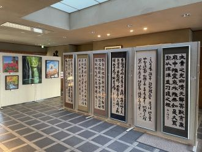
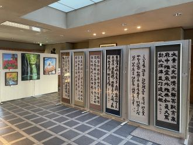


 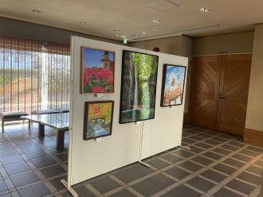
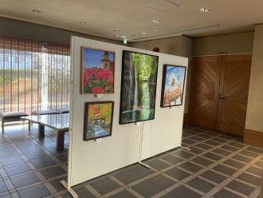


 SSH・普通科 課題研究発表会 開催
SSH・普通科 課題研究発表会 開催
2月2日（金）、課題研究発表会が開催されました。学年、文理、普通科理数科、すべての枠をとりはらい、154の研究班が20会場で繰り広げた課題研究の祭典です。研究テーマはすべて生徒自身が決定します。（下記URL参照） スライド投影が中心ですが、ポスター発表もあります。発表言語に英語を選ぶ班もあります。発表時間は8分。7分の質疑は「当たり前の文化」として盛り上がります。課題研究は学びの集約です。学びは人前で言語化して進化します。そのプロセスを生徒全員が経験できるのが本校の誇りです。
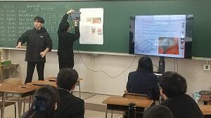


普通科課題研究・中間発表会開催
11月21日実施の普通科課題研究中間発表会の様子をお伝えします。1・2学年全員、計17会場で行われました。1学年はクラス単位での発表、2学年はクラスに加え、SSH班、英語発表班、民間とのコラボ班など多様なカテゴリーに分かれて発表しました。各班の研究テーマは生徒自らが設定します。研究活動も生徒が主体的に調査・実験・フィールドワークに取り組みます。生成AIがもてはやされた1年でしたが、本校は成果物以上に個人的体験に重きを置いていたので対応できました。また「データの正しさ」がより問われる時代になりました。今後のブラッシュアップで精度を高めていきます。


 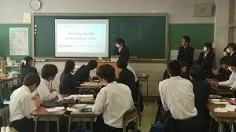
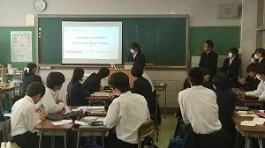

 美術・工芸部 総合文化祭に出品
美術・工芸部 総合文化祭に出品
千葉県立美術館で開催される『令和5年 千葉県高等学校総合文化祭美術・工芸作品展』に美術部と工芸部の作品が展示されます。入場無料でどなたでもご覧いただける作品展となっておりますので、ぜひご来場ください。
会期:11月7日(火)～11月12日(日) 9:00～16:30
場所:千葉県立美術館
(美術部は第4展示室、工芸部は第6展示室にて展示しています。)


 地域とつながる探究学習
地域とつながる探究学習


 ダンス同好会 ３年生引退公演
ダンス同好会 ３年生引退公演
4月27・28日の二日間、お昼休みに体育館にて３年生引退公演を行いました。
３年生にとっては今回の公演がラストステージとなりましたが、盛況の中無事に公演を終えることができました。
いつも応援・サポートをしてくださる皆様、来場してくださった生徒・先生方、本当にありがとうございました。
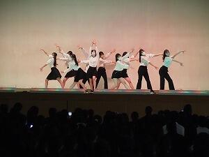 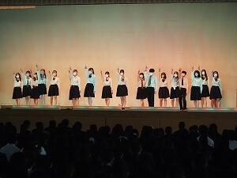 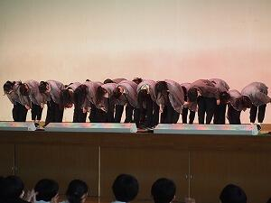 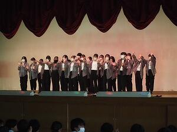
 開催予告 SAKURA Art & Learning 3days
開催予告 SAKURA Art & Learning 3days

課題研究「学びの発表会」
R4佐倉高校課題研究テーマ一覧.pdf
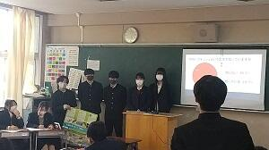

 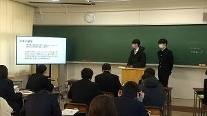
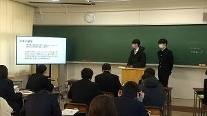

 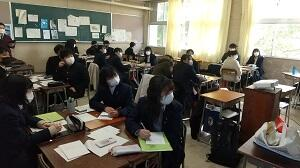
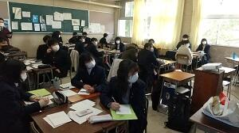
 2022年度全国高校生フォーラム
2022年度全国高校生フォーラム


 普通科課題研究「佐倉スイーツ」班の紹介
普通科課題研究「佐倉スイーツ」班の紹介
 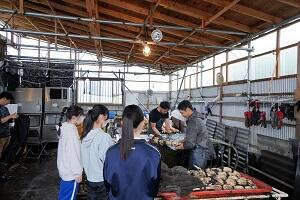
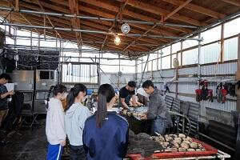 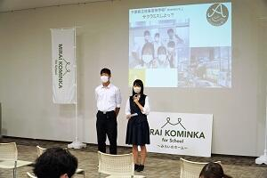
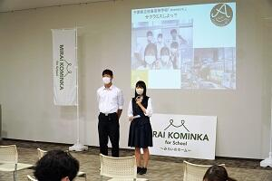 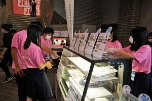
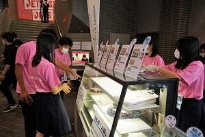
美術部･工芸部 総合文化祭作品展に出品
美術部からは油画や水彩画など絵画20点が展示されます。工芸部からは陶芸や籐など立体作品が17点展示されます。また、今年度の全国高等学校総合文化祭とうきょう大会に出品された『indigo☆night』も展示されます。どの作品も個性が光る素晴しい作品ばかりです。
会期は令和4年11月15日(火)～11月20日(日)9：00～16：30です。入場無料でどなたでもご覧頂ける作品展となっておりますので、ぜひご来場ください。


 ２学年普通科中間発表会
２学年普通科中間発表会
 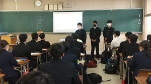
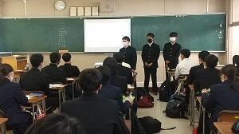


 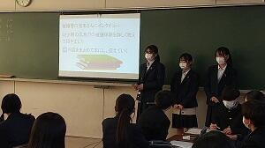
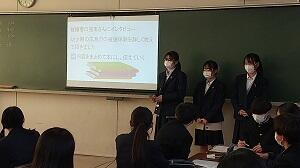
１学年普通科中間発表会


書道部 全国高等学校総合文化祭（東京）に出品
展覧会には行書作品の「臨 米芾 糧院帖」を出品し、講評会でも取り上げられました。他県の出品者と共に参加した交流会では、ミニ巻子に江戸文字で創作する体験を行い、充実した時間となりました。


弓道部関東大会報告
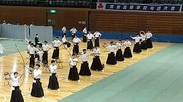


6月5日（土）、第65回関東高等学校弓道大会が群馬県のALSOKぐんまアリーナで開催され、本校男子弓道部（島根・浅賀・遠藤・茂呂）が出場しました。結果は、24射中10的中と普段の実力を発揮できず、予選を通過することはできませんでした。大会は綿密な感染対策がなされ、無観客で実施されました。多くの大会関係者と鹿山会・PTA様はじめ、ご支援いただいた多くの方々に感謝し、次の大会に向けてまた精進を続けます。
弓道部男子団体関東大会出場決定


4月24日(土)・25日(日)に千葉県総合スポーツセンターで行われた関東高等学校弓道大会千葉県予選において、男子団体が4位に入賞し、４年ぶりの関東大会出場を決めました。関東大会は６月４日・５日・６日に群馬県前橋市で開催されます。コロナ禍で活動にも様々な制約がありますが、更なる高みを目指して、ベストを尽くします。応援よろしくお願いします。
Sakur Art(佐倉高校文化系部活動合同作品展)
 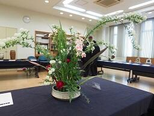
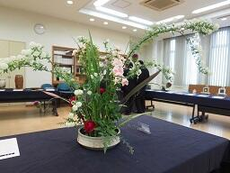
 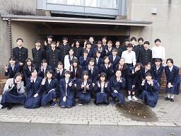
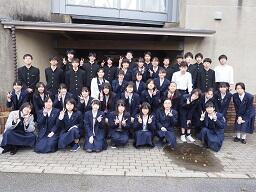
3月19日(金)～22日(月) 11:00～16:00 Sakur Art 展（美術部・書道部・華道部・工芸部・写真部の合同作品展）が開催されました。また、音楽部の映像による発表も同時に行われました。この催しは平成25年度に始まり、今年で第８回を迎えます。例年はＤＩＣ川村記念美術館のギャラリーをお借りして実施し、多くの来場者にお越しいただいていましたが、今年は本校の地域交流施設での開催となりました。新型コロナ感染症拡大防止のため、来場者を生徒・保護者に限定しましたが、200名を超える来客があり、芸術部活動として貴重な発表の機会を得ることができました。コロナ禍が収束するまで、文化系部活動も様々な制約を受けますが、今後も良い作品作りを目指して精進してまいります。ご来場本当にありがとうございました。
テニス部（女子）新人戦県ベスト８
10月5日（土）、6日（日）白子町共同コートで行われた千葉県高等学校新人テニス大会において、テニス部（女子）が団体の部ベスト８に入りました。
１回戦市川南高校に４-１、２回戦柏井高校に３-１、３回戦県立柏高校に３-１で勝利し、準々決勝では優勝した学館船橋高校に敗退しましたが、来年度の関東大会県予選会の出場権を獲得しました。
今後さらに日々練習に励んでいきたいと思います。
英語ディベート大会優勝
この大会は、全国英語ディベート連盟の流れに従い、論題について肯定側と否定側に分かれ、以下の4つのステップを経て、ジャッジが「どちらがより説得力があるか」を判定します。
① 立論 肯定側はメリットを、否定側はデメリットとなる点を説明する。
② アタック 相手の立論に対し、反論する。
③ ディフェンス 相手の反論に対し、再反論し、立論を立て直す。
④ 要約 総括し、主張が成り立つことをアピールする。
もちろん、試合中すべてのやりとりは英語で行われます。事前に準備しても、ただ原稿を読むだけでは試合は成立しません。相手の述べている内容を理解し、そのことについて反論するという即興での対応も求められます。このことから、これから求められる英語力の向上に大きく役立つと言われています。
今回の論題：
That the Japanese government should limit the weekly maximum averageworking hours, including overtime, to 48 hours. (following the E.U.)
<日本国は、残業も含めた週あたりの最長平均労働時間を(E.U.にならい）48時間に制限すべきである。是か非か。>


工芸部 全国高等学校総合文化祭


 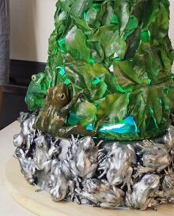
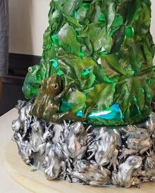
緑の募金活動（JRC同好会）


今日７月11日、JRC同好会の皆さんが、市内や全国の緑化に使われる「緑の募金」の募金活動を通学時間帯にあわせて、西門付近で行いました。国では昭和25年以来「緑の羽根募金」運動が進められてきましたが、平成7年に戦後50年を契機として「緑の募金法」が制定され、「緑の募金」を通じたボランティアによる森林づくりが国内はもとより地球規模で進められています。企業、地域、学校、職場から善意の寄付を募り、森林ボランティアやNPOなどを通じて国内外の森林づくりや人づくりをはじめとした様々な取り組みを行っている活動です。本校でのJRC同好会の皆さんによる募金活動は、明日も行われる予定です。 → 募金結果については>>続きを読むをクリックしてください。
テニス部（女子）関東高等学校テニス大会千葉県予選会ベスト１６
テニス部（女子）が関東高等学校テニス大会千葉県予選会の団体の部でベスト１６
（２年連続）に入りました。４月２８日（日）県総合スポーツセンターテニスコートで行われた大会において、１回戦安房高校に２－０で勝ち、２回戦千葉敬愛高校に０－２で敗退しましたが、２年連続で県大会ベスト１６という成績を残しました。５月３１日に行われる３年生最後の大会になる県総体に向けて、更に練習に励んでいきたいと思います。
将棋部高校将棋選手権千葉県大会で５位に入賞
将棋部が５月６日（月）千葉県教育会館で行われた高校将棋選手権千葉県大会の団体戦、スイス式トーナメント戦５回戦で３勝２敗の成績で県５位に入賞しました。
１１日に行われる個人戦でも上位入賞できるよう頑張りたいと思います。
弓道部女子個人の部県大会優勝
第63回関東高等学校弓道大会千葉県予選会が行われ、女子個人の部で越川優里佳さんが優勝しました。団体予選、個人予選、個人決勝と18連中で上位二人の競射まで駒を進め、最後は24cmの小さな星的に的中させ、見事優勝しました。

音楽部第９回定期演奏会
 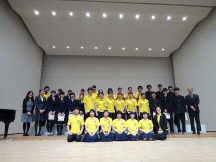
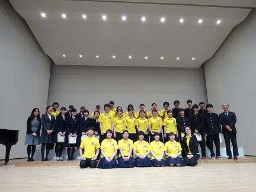 卒業式に向けて ～華道部の活動～
Girls’ Rocketry Challengeプログラムの修了式がありました
これまでの活動報告を行い、モデルロケットを作る際に工夫した点などを英語で発表してきました。修了式の後は、今回のプログラムを支援してくださっている企業の方々とも英語で交流しました。
今回の活動を通じて、データをとりながら工夫してものを作る楽しさや大変さを経験することができました。これまで御協力くださった方々に感謝申し上げます。
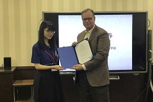
 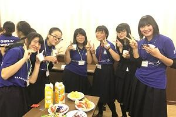
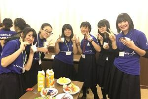
歳末助け合い募金
また、募金してくださった地元の皆さま、先生方や生徒の皆さん、御協力いただきありがとうございました。

レスリング部 関東選抜大会の出場が決まりました
本校からは、２年生の飯島慎一郎君が９２ｋｇ級で出場しました。
ノルディック方式というリーグ戦で試合が進められ、最初のリーグ戦では１勝１敗でした。
準決勝では敗退したものの、 ３位決定戦で見事勝利しました。
その結果、２月２日（土）、３日（日）に群馬県館林市で開催される、
関東選抜大会の出場が決まりました。
関東大会でも活躍できるよう、日々練習に励みます。
  | 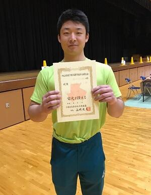 |
将棋部 県新人戦準優勝
将棋部 山本 拓真 君
平成３０年１０月２７日（土）に千葉県教育会館で行われた、千葉県高等学校将棋新人大会において、１年山本拓真君が準優勝しました。
この結果、１２月２３日（日）に山梨県で行われる関東大会並びに平成３１年２月１日（金）に岡山県で行われる全国大会に出場します。
モデルロケット全国大会
１０月２０日（土）に茨城県つくば市JAXA宇宙航空研究開発機構・筑波宇宙センターで行われたモデルロケット全国大会に参加してきました！
パラシュート滞空時間競技は、事前確認の打ち上げの成果が出せず、悔しい結果となりました。指定された範囲内にペイロード（カプセル）を落とす競技では、ワンバウンドで範囲外に出てしまうという、非常に惜しい結果となりました。高度競技では、予定通りの高度まで打ち上げることができましたが、もう一歩の結果となりました。悔しい部分もありましたが、充実した活動ができたと思います。今後はGirls’ Rocketry Challengeプログラムの修了式でのプレゼンテーションの準備を行う予定です。
テニス部（女子）新人戦ベスト１６
１０月６日（土）フクダ電子ヒルステニスコートで行われた千葉県高等学校新人体育大会テニス大会において、１回戦白井高校に５対０、２回戦翔凜高校に３対０で勝ち、３回戦は準優勝の学館浦安高校に０対３で負けてしまいましたが、２年連続で県大会ベスト１６という成績を残しました。今後は、これ以上の成績を目指して、日々練習に励んでいきます。
モデルロケット試作機打ち上げPart2

JRC同好会の活動
ESS部の活動
平成３０年９月１８日（火）・１９日（水）本校ESS部生徒が通学合宿に参加している小学生に英語に親しんでもらおう、理科に興味を持ってもらおうと考え、英語で説明する化学実験を行いました。小学生の皆さんは英語に耳を傾けたり、英単語を覚えたりしながら、目を輝かせて実験に取り組んでいました。
通学合宿についてはこちらを御覧ください。→ 校長花ごよみ「通学合宿」
モデルロケット試作機打ち上げ
全国高等学校ビブリオバトル２０１８ｉｎ東京大会に参加してきました。
成蹊大学で行われた「全国高等学校ビブリオバトル２０１８ｉｎ東京大会」に２年生の勝畑恭子さんが参加しました。
５～６人での予選がまず行われ、その中でチャンプ本に選ばれると決勝に進みます。一人５分間のプレゼンを行うのですが、見応え、聞き応えがありました。その後の質疑時間でも愉快な応酬があり、どの発表者からも、この本を是非読んでもらいたい、という熱意が伝わってきました。
残念ながら本校は決勝に進むことはできませんでしたが、勝畑さんは来年の出場を希望しています。来年は本校からの挑戦者が増えるといいですね。
全国高等学校総合文化祭
本校３年の渡邉聖月さんが千葉県代表として作品を展示いたしました。
世界高校生水会議の様子を掲載しました。
平成３０年７月２４日（火）～２８日（土）に行われた世界高校生水会議「Water is Life 2018」に本校生徒４名が参加した様子や結果等を「SGH」（スーパーグローバルハイスクール）のページに掲載しました。御覧ください。
SGHのページへ（世界高校生水会議「Water is Life 2018」） ← こちらをクリックしてください！
将棋部 全国ベスト１６
将棋部 山本 拓真 君 全国ベスト１６の快挙
第４２回全国高等学校総合文化祭（２０１８信州総文祭）将棋部門に出場していた将棋部山本拓真君（１年）が、全国ベスト１６というすばらしい結果を出しました。
応援ありがとうございました。
第8回サイエンススクールフェスティバル
７月２９日（日）第８回サイエンススクールフェスティバルに化学部、生物部、電気部の生徒１７名が参加しました。
詳細はこちらからご覧いただけます。
Girls’ Rocketry Challengeプログラム ロケットを飛ばしました
第３期Girls’ Rocketry Challengeプログラムに本校の生徒が参加しています（任命式・講習会の様子はこちらからご覧いただけます）。
６月１８日（月）に株式会社リバネスの方がアドバイザーとして来校され、モデルロケット全国大会に向けての計画を相談しました。また、今回は初めて本校のグラウンドで発射台を制作し、ロケットを飛ばしました。

部活動も頑張っています！
平成３０年６月１５日（金）～１７日（日）に行われた千葉県高等学校総合体育大会（県大会）に、柔道部、レスリング部、卓球部、ソフトボール部、バレー部（男・女）、ソフトテニス部（男・女）、バドミントン部、弓道部、バスケットボール部（男・女）が出場しました。
多くの部が地区予選を勝ち抜き、県大会に出場しています。どの部も全力を尽くして頑張りました。その中で上位成績を残した部は次のとおりです。
ソフトテニス部 男子団体 県９位
バスケットボール部 男子 県ベスト１６
また、音楽部が本校同窓会の鹿山会総会後に歌声を披露しました（写真）。
第３期Girls’ Rocketry Challengeプログラムに参加します
「Girls’ Rocketry Challengeプログラム」は世界25カ国で科学教育に用いられているモデルロケットの開発によって、ものづくりの楽しさを知るとともに、物理・数学に関する知識を楽しみながら深めることを目指したものです。
オリジナルのモデルロケットの開発、制作に取り組み、今年１０月に行われる全国大会に挑戦します。
５月１２日（土）任命式・モデルロケット講習会に参加しました。
モデルロケットに関する講義を受け、従事者資格（ライセンス）を取得しました。また、専門家スタッフや他校の生徒との交流もありました。


５月１９日（土）JAXA宇宙航空研究開発機構・筑波宇宙センターで行われたモデルロケット全国大会を見学しました。
「Girls’ Rocketry Challengeプログラム」第２期に参加されている他校のチームから情報をたくさんいただきました。より良いロケットを目指して頑張ります！


ドイツ･イギリス研修報告会（GL探究）
平成３０年５月８日（火）６限に、３月に行われたSGHドイツ･イギリス海外研修の報告会を行いました。
研修参加者が１・２年生を対象に研修の内容等について報告しました。ドイツ海外研修では実際に現地で実施したプレゼンテーションやフィールドワークについて報告し、イギリス海外研修ではフィールドワークやディスカッション等について報告しました。
いずれの研修でも、課題研究を深めたり、貴重な体験をしたりすることができたことが伝わりました。１年生は課題研究のテーマを考えることや海外に目を向ける意識を高めることができ、２年生は、課題研究を深めるためのヒントを得ることができたようです。


こちらも御覧ください！→ 校長花ごよみ
音楽部 第８回定期演奏会
佐倉高校音楽部 第８回定期演奏会 |
♪ ア・カペラ・コーラス＆ミュージカル「マイ・フェア・レディ」♪ |
皆様お誘い合わせの上、ご来場ください |
| 日 時 平成３０年３月２５日（日）１３時３０分開演（１３時開場） |
| 会 場 プリミエール酒々井文化ホール |
| （ＪＲ酒々井駅から徒歩１０分、京成酒々井駅から徒歩１５分） |
| 印旛郡酒々井町中央台３－４－１ TEL ０４３－４９６－８６８１ |
★全席自由、入場無料★ |
第７０回記念千葉県小・中・高校書初め展覧会で市長賞を受賞

１月２８日（日）に千葉市稲毛区の県総合スポーツセンター体育館で行われた千葉県小・中・高校書初め展席書大会に、本校から学校代表として書道部１年の細野優香さん、同２年の髙橋彩乃さんと永嶋琳さんの計３名が出場しました。その結果髙橋さんが高校生としては６番目となる四街道市長賞、細野さんと永嶋さんが千葉日報社賞を受賞しました。
第３回 国際研究発表会
２月１８日（日）、千葉大学で行われた「第３回国際研究発表会」に普通科５名、理数科３名の生徒が参加しました。午前は、英語でポスター発表を、午後は、ASEAN からの先生や他校の生徒と共に、地球温暖化についてディスカッションと発表を英語で行い、交流を深めました。


千葉大学 数理科学コンクール 受賞
今夏行われた第20回千葉大学数理科学コンクールの審査結果が11月3日に発表され、本校理数科2年 中野春樹君・早川航平君のペアが機巧賞（参加チームの中から2チームのみ）を受賞しました。
数理科学コンクールは、自由にゆったりと考える時間を設け、科学的思考だけでなくユニークなアイデア、柔軟な発想などを多面的に評価するコンクールです。
昨年度は課題の部で2名の受賞者が出ましたが、今年は、ロボットの部においてC言語を用いロボットを制御するアイデアやプログラムの出来が評価されました。
平成２９年１０月２１日（土）科学の甲子園千葉県大会
千葉県総合教育センターで行われた第７回科学の甲子園千葉県大会に２年生有志（８名）と天文気象部（８名）の２チームが参加しました。当日は、台風２１号接近に伴い雨模様の天気でしたが、両チームとも筆記試験（物理・化学・生物・地学・数学・情報の６分野、６０分間）と実技試験（与えられた課題にチームで相談して取り組む、１２０分間）に挑戦しました。県内の１５校２４チームが参加しました。


科学の甲子園Jr 第２回学習会
科学の甲子園Jr県大会に向け、市内の中学生を対象にした学習会の２回目が本校で行われました。
生物分野では、ドライイーストを用いた実験を行い、酵母菌の発酵に適した温度を考察しました。物理分野では、棒磁石とＵ字磁石を組み合わせたコースを作成し、鉄球を転がしてタイムを競いました。
今回の学習会でも、理数科の生徒がTAとして参加しました。
印旛地区高等学校美術工芸作品展

全国高等学校総合文化祭 みやぎ総文2017
印旛地区高等学校美術工芸作品展
科学の甲子園Jr 学習会
科学の甲子園Jr県大会に向けた市内の中学生を対象にした学習会が、7月1日に本校を会場にして開かれました。
県予選の実技試験を想定し、物理分野では班ごと自由に素材を選びボートを作成し、その移動距離を競いました。化学分野では濃度の異なる食塩水を用いて試験管内に虹を作る操作を行いました。今年度より、理数科生徒を中心にTA（ティーチングアシスタント）として活動しました。年代の近い生徒からのアドバイスなどに中学生も楽しく、TAの高校生達も充実感を持って終えることが出来ました。県予選直前にもう一度学習会を開催する予定です。

第６９回千葉県小・中・高校書初め展覧会で知事賞を受賞
１月２９日（日）に千葉市稲毛区の県総合スポーツセンター体育館で行われた千葉県小・中・高校書初め展席書大会に、本校から学校代表として書道部１年の永嶋琳さんと髙橋彩乃さんが参加しました。その結果永嶋さんがトップ賞の知事賞、髙橋さんが千葉日報社賞を受賞しました。